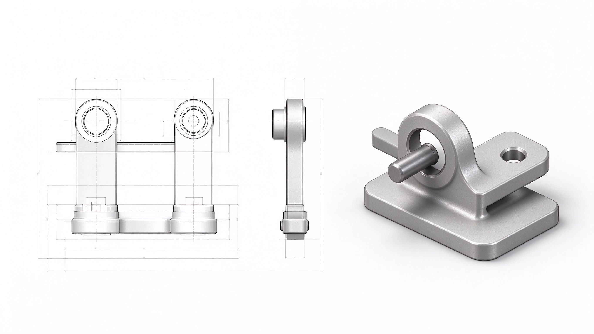

E6 阶段检验：120 分钟限时装配
这一部分讲什么
E1-E5 学完之后，做一次限时作业：用 120 分钟完成"摇臂组件"——建模三个零件、装起来、出爆炸图，并在规定时间内把文件和截图发到微信群。目的是确认每个人都能独立走完"建模 → 装配 → 检查 → 出文档"的完整链路。

检验内容（示例题）
完成"摇臂组件"：
- 摇臂零件：一个带旋转特征的主体 + 一个 Φ8 孔
- 转轴零件：阶梯轴（旋转特征，Φ8 段 + Φ12 段）
- 底座零件：一块板（拉伸 + 两个 Φ4.5 孔）
- 三个零件装配：配合正确、无干涉
- 生成爆炸视图截图
图纸在发题时一并发放（带尺寸），零件号/材料属性可以简化，但文件名必须规范。
提交：倒计时结束前，把三个零件 + 装配体文件（用「打包」导出）和爆炸视图截图发到微信群，超时视为未完成。
评分
| 项目 | 占比 | 看什么 |
|---|---|---|
| 零件建模正确性 | 30% | 旋转/拉伸特征正确、尺寸准确 |
| 配合合理性 | 30% | 重合/同轴心使用得当，无过定义 |
| 无干涉 | 20% | 干涉检查 0 干涉 |
| 爆炸视图与文档 | 20% | 爆炸图可读，文件打包规范 |
60 分通过。没通过一周后补一次。
检验前自己过一遍
- 能独立画"半剖面 + 中心线"做旋转特征吗？（E2）
- 知道扫描时轮廓必须画在路径端点吗？（E3）
- 会用"重合 + 同轴心"把轴装进孔吗？（E4）
- 知道干涉检查在「评估」标签里吗？（E4）
- 会新建爆炸视图并点"完成"吗？（E5）
- 会用「打包」导出吗？（E4）
怎么准备检验前一天限时 90 分钟完整做一遍"底板组件"（E4+E5 合并），完成后即可满足检验要求。
检验之后
- 检验后 3 天内，将分数录入多维表格「阶段考核表」
- 全员 60 分以上，进入 D 阶段，按意向和完成情况分「底盘与机架组」「云台与发射组」
- 补考没过的，一对一辅导后重排，不挤占 D 阶段进度
参考资料
视
视频阿奇《40 道 SOLIDWORKS 练习题教程》装配题
挑 2-3 道装配体题限时练手，覆盖"装配+爆炸图"考点。
https://www.bilibili.com/video/BV1yc411A7cJ
没有电脑的同学：电脑到位后单独补实操；若还没到位，先以「识图 + 装配顺序口述」检验（给出装配爆炸图，说清配合顺序与类型），实操部分电脑到位两周内补。